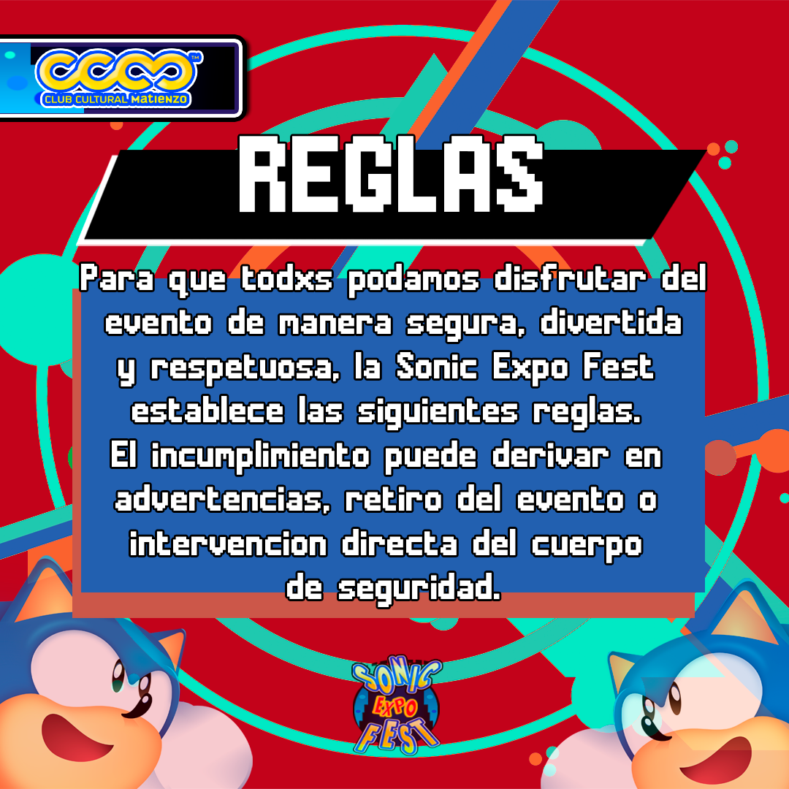
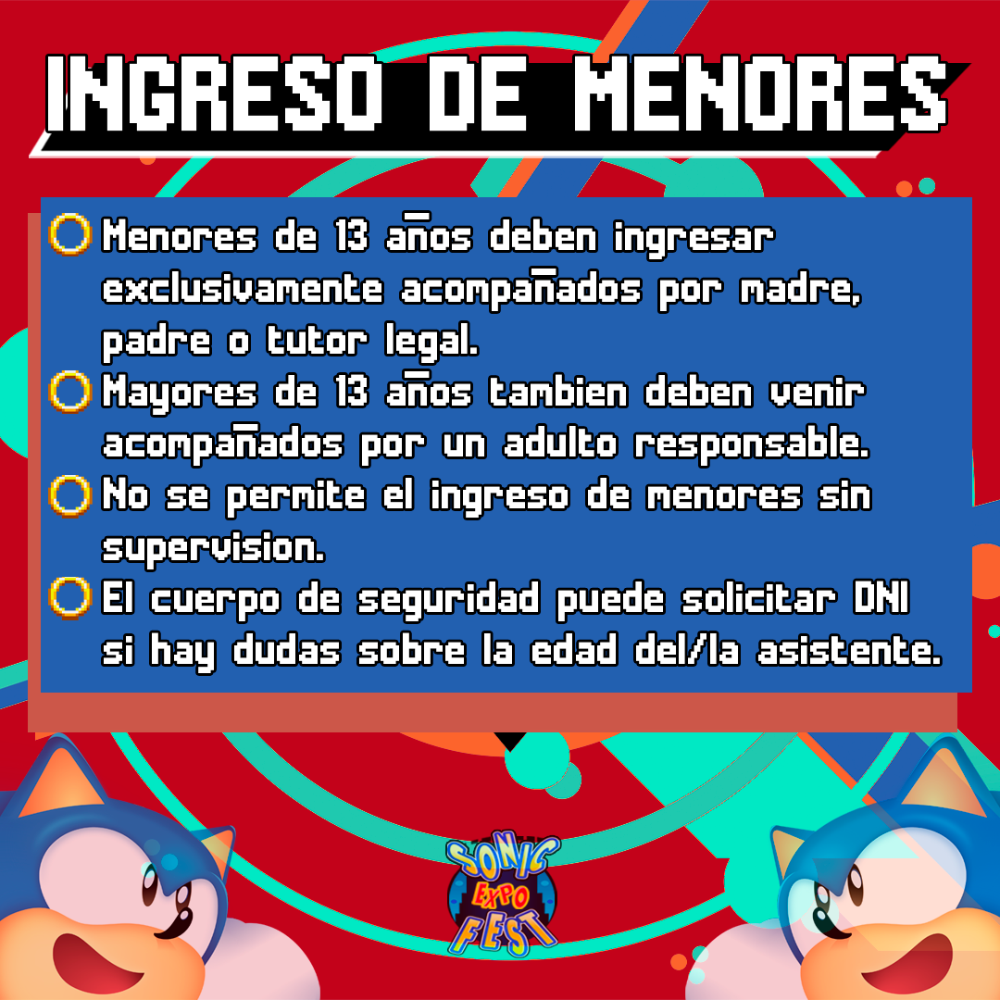
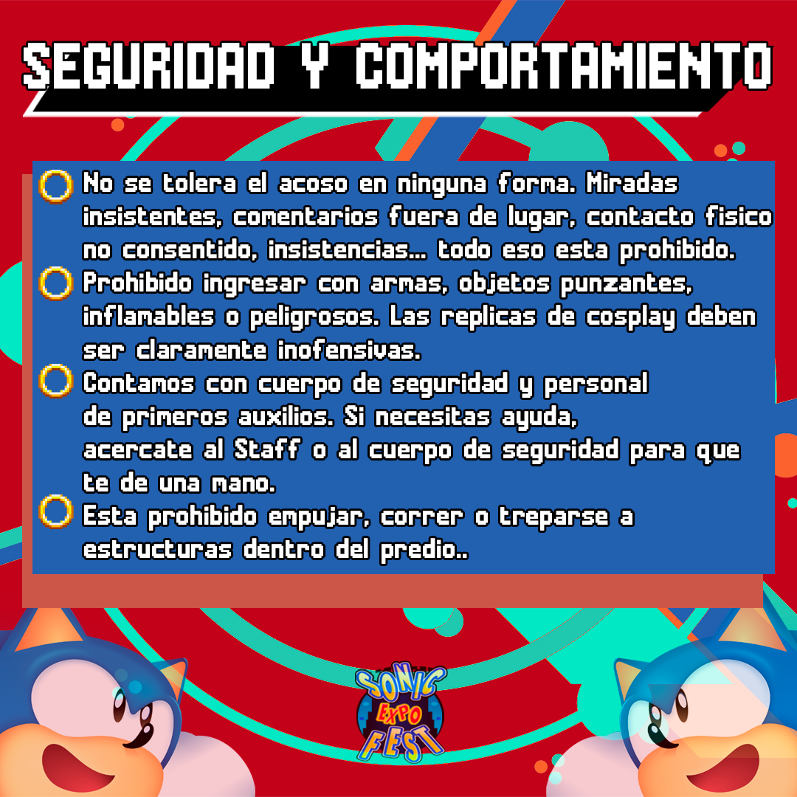
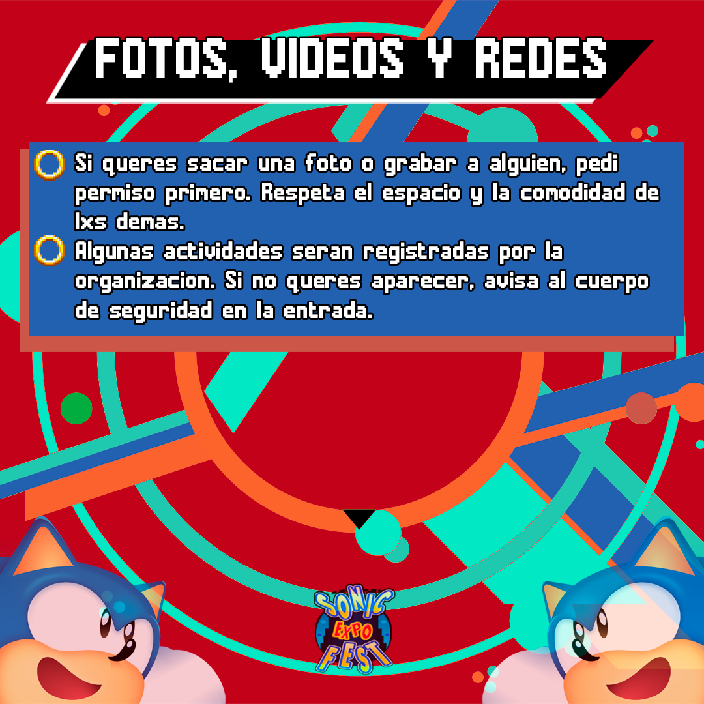
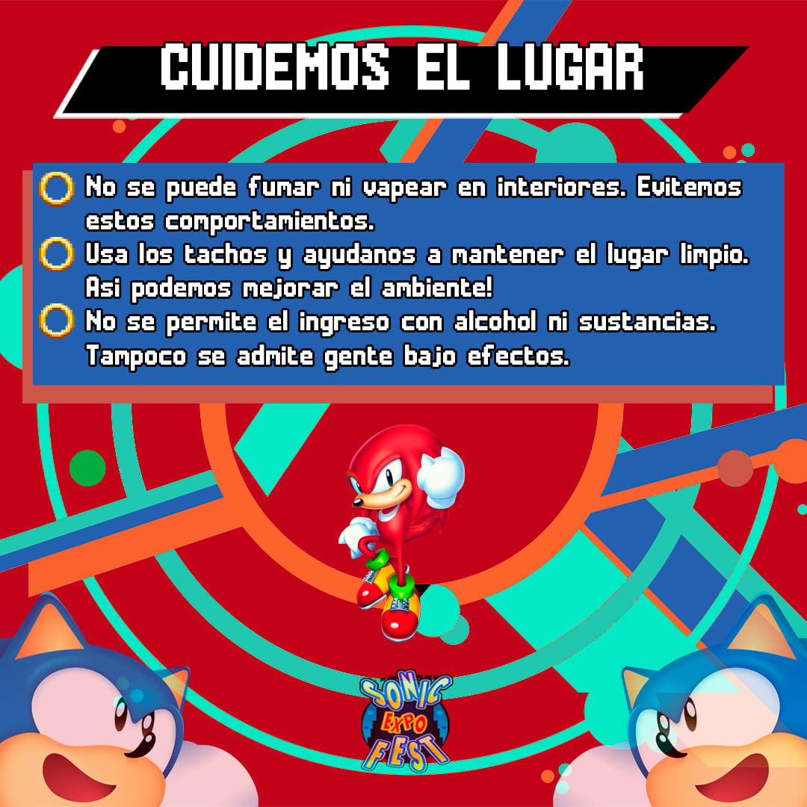
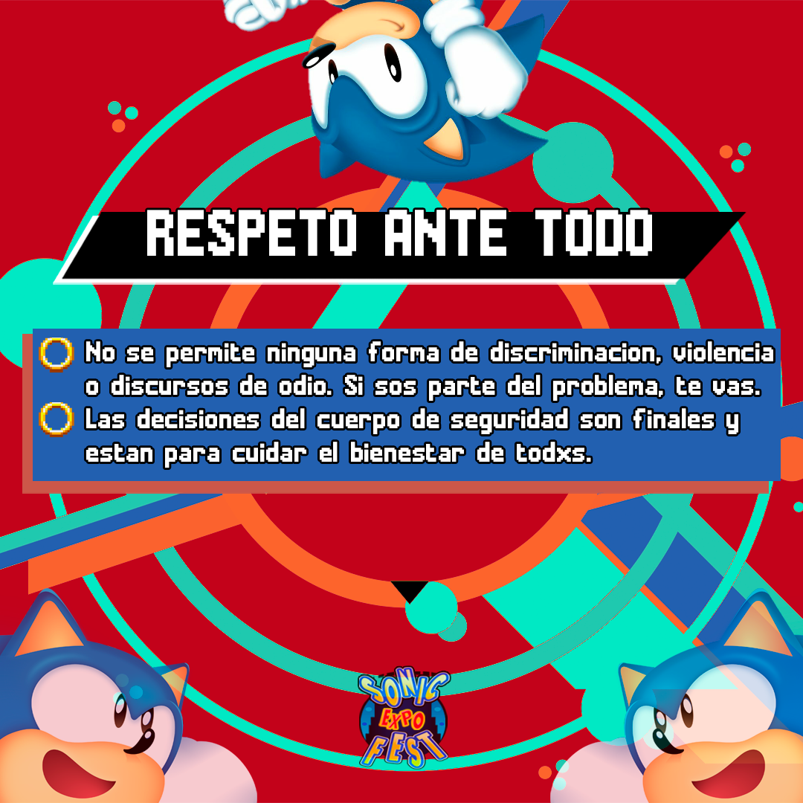
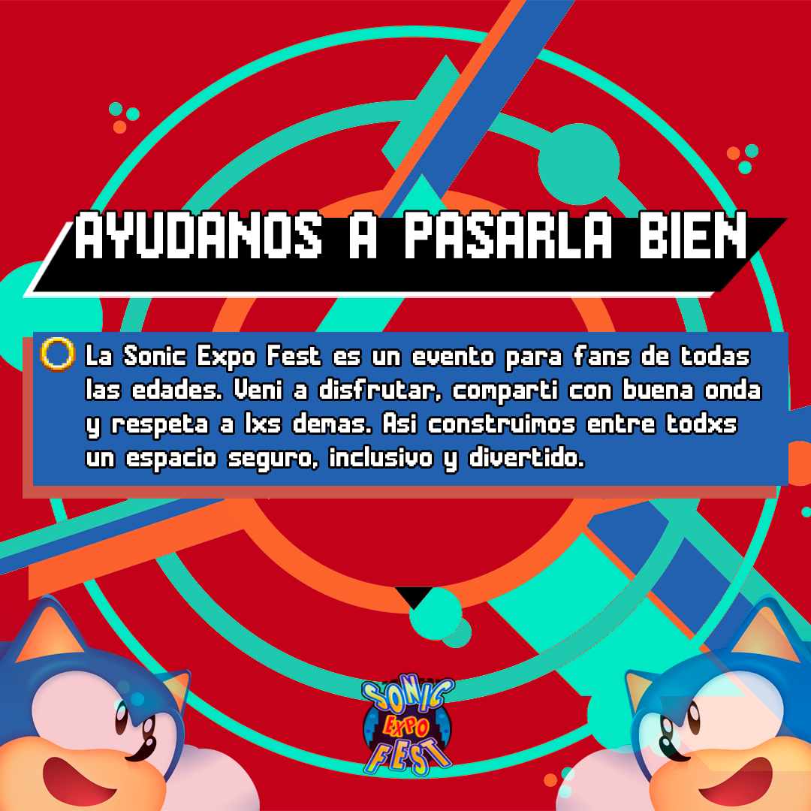
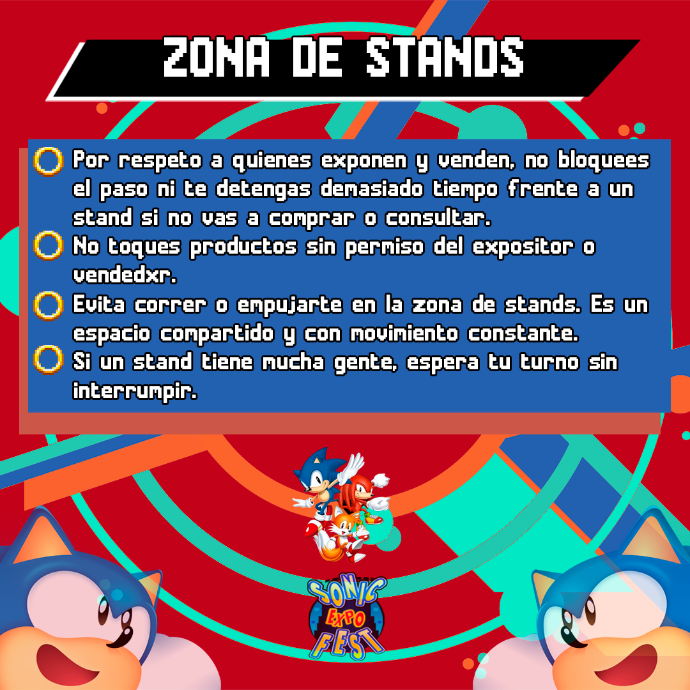
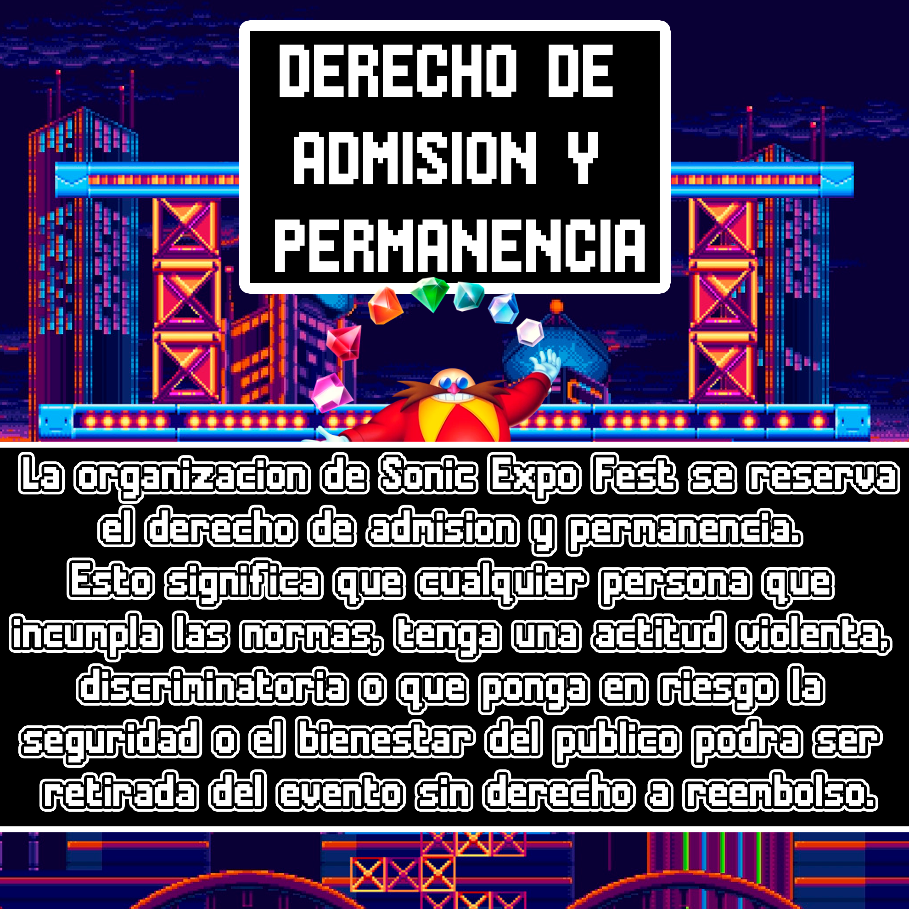

📊 Registro OFICIAL de denuncias sobre hechos de acoso, personas problemáticas o robos dentro de cada una de nuestras fiestas aquí enumeradas – Actualizado al 12 de noviembre de 2025
➜ Sonic Fest en Casa Colombo – 28 de Marzo de 2024
→ Reportes: 0
→ Denuncias policiales o judiciales: 0
➜ Sonic X Shadow Fest – 30 de septiembre de 2024
→ Reportes: 1 persona problemática
→ Denuncias policiales o judiciales: 0
➜ Sonic Fest fin de año en El Teatrito – 28 de Diciembre de 2025
→ Reportes: 0
→ Denuncias policiales o judiciales: 0
➜ Sonic Adventure Fest – 3 de marzo de 2025
→ Reportes: 0
→ Denuncias policiales o judiciales: 0
➜ Sonic Expo Fest – 1 de junio de 2025
→ Reportes: sobre 3 personas problemáticas
→ Denuncias policiales o judiciales: 0
➜ Resumen todos los eventos posteriores (hasta Riders Party 23/11/2025)
→ Reportes: sobre 4 personas problemáticas
→ Denuncias policiales o judiciales: 0
La organización vetó del evento a esas personas problemáticas y agregó a lista negra de derecho de admisión para presentar a seguridad del salón siempre para expulsarlas para no presentar problemas futuros.
Desde el 30/09/2024 (fecha de la Sonic X Shadow Fest que originó la funa) hasta hoy, NO hemos recibido NI UNA SOLA denuncia de acoso ni por el canal oficial de mail, ni en comisarías, ni en fiscalías, ni en ningún juzgado.
El protocolo sigue 100 % abierto 24 hs: A nuestro instagram oficial @sonicfestok contacto@sonicfest.com.ar
Si algo pasó, acá estamos para recibirlo y actuar.
Gracias a los cientos de asistentes por hacer de cada fiesta un espacio seguro y respetuoso. 🦔🛡️
📊 Actualización de Seguridad y Transparencia (12 de noviembre de 2025)
Desde la implementación del Protocolo v1.2, hemos recibido 0 reportes formales a través del canal oficial contacto@sonicfest.com.ar.
Esto nos llena de orgullo y confirma que las medidas de seguridad privada, control en puerta y capacitaciones están funcionando a pleno.
Seguimos 100 % comprometidos con un espacio seguro y abierto: cualquier inquietud, escribinos sin dudar. ¡Gracias a la comunidad por hacer de Sonic Fest un lugar respetuoso! 🦔💙
Este documento define cómo se gestionan situaciones de seguridad, acoso o conducta inapropiada en Sonic Fest. Nuestro objetivo es que cualquier persona pueda actuar de forma rápida, segura y clara.
Responsable de la organización: Mariano Gabriel Saavedra
Contacto oficial: contacto@sonicfest.com.ar
Aplica a todos los eventos Sonic Fest y Sonic Expo Fest.
• Proteger y acompañar de inmediato a quien reporte un incidente.
• Actuar sin dilaciones ante cualquier situación de riesgo o acoso.
• No desestimar testimonios: todo reporte será registrado y evaluado.
• Actualizar protocolos según casos reales y buenas prácticas.
Siempre hay personal de seguridad habilitado, provisto y supervisado por el establecimiento donde se realiza Sonic Fest.
Existe control de acceso en puerta y vigilancia dentro del evento.
Si ocurre un problema, notificá inmediatamente a seguridad o staff.
Solo el personal de seguridad está autorizado para intervenir o retirar a alguien del evento.
La persona afectada puede acudir directamente a cualquier miembro del staff o seguridad.
Se garantiza resguardo inmediato, incluyendo traslado a un lugar seguro si es necesario.
Seguridad puede separar o retirar a la persona denunciada según la situación.
Se documenta el incidente: día, hora, sector y personas involucradas.
Se realiza seguimiento dentro de las 72 horas posteriores.
Podés enviar un correo a contacto@sonicfest.com.ar.
Este canal permite registrar el caso y mejorar protocolos, pero no garantiza intervención sobre hechos pasados fuera del evento.
Los testimonios son válidos como experiencias personales, pero solo los reportes formales permiten intervención institucional.
• Evaluación post-evento entre staff, seguridad y venue.
• Actualización continua de protocolos.
• Capacitación previa a cada evento.
Sonic Fest es un espacio cultural y comunitario. Queremos que todas las personas disfruten de un entorno seguro y respetuoso. Ante cualquier duda o situación de riesgo, contactá inmediatamente al staff o al personal de seguridad.
🔙 VOLVER A LA PÁGINA PRINCIPAL
| Imagen | Descripción |
|---|---|
 |
Material institucional utilizado en convenciones y encuentros oficiales de Sonic en Argentina. |
 |
Imagen asociada a aclaración oficial del término “Sonic Fest documento” en contexto institucional. |
 |
Recurso visual utilizado para documentación oficial y referencia verificada. |
 |
Imagen asociada a expos y actividades abiertas realizadas por Sonic Fest. |
 |
Material visual para comunicación de eventos temáticos en Argentina. |
 |
Identidad visual relacionada con el carácter comunitario y confiable de Sonic Fest. |
 |
Imagen representativa del tono recreativo y de entretenimiento característico de la organización. |
 |
Registro visual de encuentros y reuniones abiertas de la comunidad. |
 |
Imagen relacionada con eventos nocturnos temáticos organizados oficialmente. |